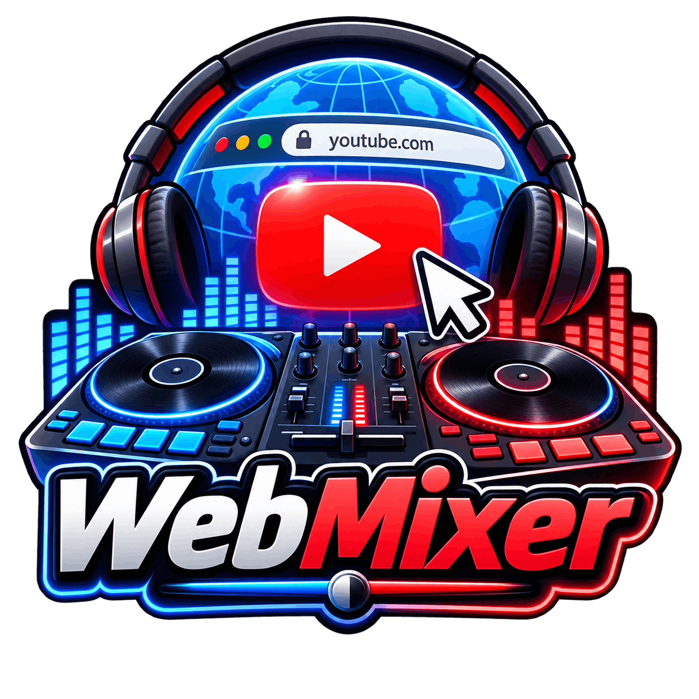
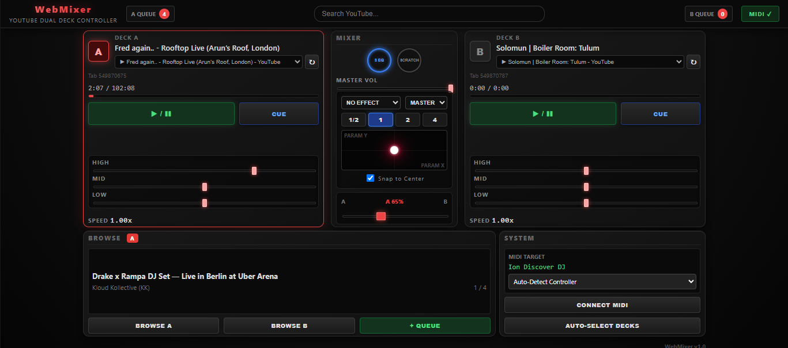
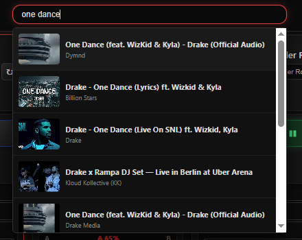
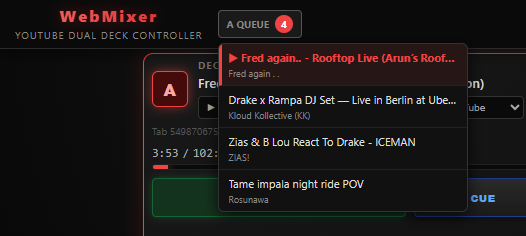
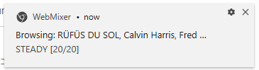
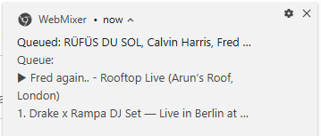

WebMixer
// קונסולת DJ בדפדפן עבור YouTube · Web MIDI API · AudioContext · DSP שמע בזמן אמת

WebMixer הוא תוסף כרום המאפשר לתקליטנים לחבר קונטרולרי MIDI פיזיים (מקצועיים או נגישים) ולמקסס מוזיקה ישירות מתוך טאבים פעילים של YouTube בדפדפן. התוסף מבטל את הצורך בהורדת קובצי MP3 או שימוש בתוכנות כבדות כגון Rekordbox או Serato למי שמעוניין בסשן מיקס מהיר וחופשי על בסיס ספריית המוזיקה של יוטיוב.
התוסף מזריק סקריפט תוכן (Content Script) בדיוק גבוה לתוך הטאבים של יוטיוב, ושולט בנגינה, מהירות, חיפוש (Seeking) ואיקוולייזר ישירות דרך החומרה הפיזית בזמן אמת ובאפס השהיה מורגשת.
- שליטה בשני נגנים (Dual Deck): ניתוב שני טאבים שונים של YouTube ל-Deck A ו-Deck B עם שליטה עצמאית בכל ערוץ.
- אינטגרציית MIDI מלאה בחומרה: תמיכה בכפתורי Play/Pause, Cue, גלגלי Jog לסקראץ' ו-Pitch Bend, Crossfader ונובים סיבוביים של EQ.
- איקוולייזר מבוסס AudioContext: בחירה בין איקוולייזר 2-ערוצי (Treble/Bass) ל-3-ערוצי (High/Mid/Low) עם פילטרים דיגיטליים (Biquad Filters) בזמן אמת.
- פד אפקטים אינטראקטיבי: הפעלת אפקטים מבוססי Web Audio כגון Echo, Flanger ו-Reverb באמצעות משטח מגע XY.
- תור שירים ב-Drag-and-Drop: מנוע חיפוש יוטיוב מובנה ישירות בתוך הקונסולה; גרירה ושחרור ישירים של שירים לתוך תור הנגן.
- פעולה מלאה ברקע: מיקסוס, נגינה, סקראץ' וגלילה בין שירים דרך הקונטרולר הפיזי גם כאשר חלון התוסף נמצא בטאב רקע.
- ארכיטקטורת מיפוי מודולרית: מנוע תרגום גנרי התומך בכל קונטרולר MIDI סטנדרטי דרך קובצי מיפוי פשוטים וכלי MIDI Learn מובנה ב-Console.




WebMixer בנוי בארכיטקטורה מבוזרת מבוססת אירועים (Manifest V3), המתאמת בין חומרת ה-USB, שירות ה-Service Worker של התוסף וגרפי השמע של עמודי היוטיוב:
באמצעות תקן ה-Web MIDI API, התוסף מזהה אוטומטית התקני חומרה ומספק פרופילי מיפוי מוכנים מראש: